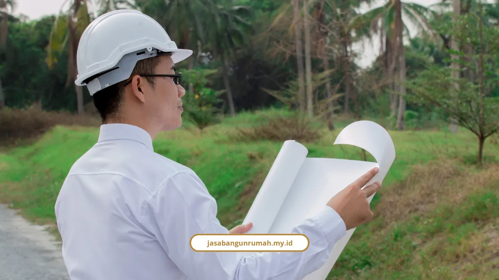

Daftar Isi
- Kenapa Susah Banget Cari Kontraktor yang Bisa Dipercaya di Semarang?
- Apa yang Bikin jasabangunrumah.my.id Beda dari yang Lain?
- Layanan Apa Saja yang Bisa Saya Pesan?
- Berapa Kisaran Biaya Bangun Rumah di Semarang Tahun 2026?
- Gimana Kalau Tanah Saya di Semarang Atas Miring atau Berkontur?
- Ada Bukti Nyata Nggak Kalau Rumah yang Sudah Dibangun Beres dan Berkualitas?
- Apa Kata Klien yang Sudah Pakai Jasa Kami di Semarang?
- Apakah Wajib Punya PBG Kalau Mau Bangun Rumah di Semarang?
- Berapa Lama Waktu Pengerjaan Bangun Rumah 2 Lantai di Semarang?
- Gimana Cara Mulai Konsultasi Gratis dengan Kami?
- FAQ
Saya sering ketemu klien di Semarang yang trauma sama pengalaman bangun rumah sebelumnya. Makanya, artikel ini saya tulis buat jawab satu hal saja: bagaimana cara dapat jasa bangun rumah Semarang yang RAB-nya jelas dari awal, prosesnya diawasi, dan hasilnya bergaransi.
Kami melayani Semarang dengan pengalaman lebih dari 15 tahun dan sudah merampungkan 250 lebih proyek, mulai dari rumah tinggal sampai gedung komersial.
Kenapa Susah Banget Cari Kontraktor yang Bisa Dipercaya di Semarang?
Saya paham betul kekhawatiran orang yang mau bangun rumah di Semarang. Tiga hal ini yang paling sering muncul.
- Takut biaya membengkak (overbudget) karena RAB awal cuma kira-kira, bukan rincian sungguhan.
- Trauma sama kontraktor abal-abal, proyek mangkrak di tengah jalan, atau hasil kerjaan asal jadi.
- Nggak punya waktu buat mondar-mandir ngurus PBG (Persetujuan Bangunan Gedung) sendiri sambil kerja kantoran.
Menurut Irfan Nursatya, pakar pemasaran dan administrasi konstruksi, legalitas itu bukan formalitas kosong. Kontraktor yang punya SBU dan NIB berbasis risiko lewat OSS sudah terbukti punya kemampuan finansial, tenaga ahli bersertifikat SKK, dan mengikuti standar SNI.
Itu jaminan supaya proyek Anda tidak mangkrak di tengah jalan.
Apa yang Bikin jasabangunrumah.my.id Beda dari yang Lain?
Kami bukan kontraktor musiman yang baru buka tahun ini. Studio kami berdiri sejak 2010, berawal dari biro gambar arsitektur kecil, lalu berkembang jadi studio design & build terpadu.
Beberapa angka yang bisa jadi pegangan Anda sebelum memutuskan:
- Pengalaman lebih dari 15 tahun di dunia konstruksi.
- Sudah merampungkan 250+ proyek, dari rumah tinggal, ruko, sampai gedung komersial.
- Tingkat kepuasan klien mencapai 98 persen.
- Didukung 40+ tim profesional, dari arsitek sampai tukang berpengalaman.
Selain rekam jejak, ada tiga jaminan yang kami pegang: konsultasi gratis di awal, RAB transparan per item pekerjaan tanpa biaya tersembunyi, dan garansi struktur setelah kunci diserahkan.
Pembayarannya pun dibuat bertahap sesuai progres fisik di lapangan, jadi Anda nggak perlu keluar dana besar sekaligus di muka.

Layanan Apa Saja yang Bisa Saya Pesan?
Kami menyediakan solusi terpadu satu atap, jadi Anda nggak perlu bolak-balik cari vendor berbeda buat tiap tahap pekerjaan.
- Jasa Arsitek untuk konsep desain, gambar kerja (DED), sampai pendampingan izin PBG, biasanya selesai 2 sampai 4 minggu.
- Jasa Kontraktor Rumah untuk bangun hunian dari nol, rata-rata rumah 2 lantai seluas 150-200 m² kelar dalam 4 sampai 6 bulan.
- Jasa Kontraktor Bangunan untuk gedung kantor, ruko 3 lantai, sampai fasilitas publik dengan standar SNI dan K3.
- Jasa Renovasi Bangunan Gedung untuk renovasi ringan (1-2 minggu) sampai renovasi struktur besar (1-3 bulan).
- Jasa Desain Interior untuk penataan hunian, kantor, kafe, sampai restoran.
- Kalau kebutuhan Anda di luar itu, cek juga layanan lainnya yang kami sediakan, termasuk audit bangunan dan manajemen proyek.
Berapa Kisaran Biaya Bangun Rumah di Semarang Tahun 2026?
Ini yang paling sering ditanyakan, dan saya nggak akan muter-muter jawabnya. Kisaran biaya per meter persegi di Semarang tahun 2026 terbagi jadi tiga kelas.
- Spesifikasi standar/sederhana: Rp3.000.000 - Rp4.500.000/m², pakai bata merah, keramik lokal, atap genteng beton.
- Spesifikasi menengah: Rp4.500.000 - Rp6.500.000/m², pakai bata ringan, granit lokal, kusen aluminium, plafon gypsum.
- Spesifikasi premium/mewah: Rp7.000.000 - Rp10.000.000+/m², material impor sampai smart home system.
Kalau dipakai simulasi dengan spesifikasi menengah (Rp5.000.000/m²), hasilnya kira-kira begini: tipe 36 sekitar Rp180 juta, tipe 45 sekitar Rp225 juta, tipe 60 sekitar Rp300 juta, dan tipe 70 dua lantai bisa Rp350-420 juta.
Jangan lupa siapkan dana cadangan 10-15 persen dari total RAB untuk antisipasi perubahan desain atau kenaikan harga material.
Sebagai acuan resmi, Perwal Walikota Semarang No. 77 Tahun 2020 menetapkan standar harga satuan gedung negara di Semarang Rp5.340.000/m² untuk gedung sederhana dan Rp6.650.000/m² untuk yang tidak sederhana.
Kalau ingin pembahasan lebih detail soal simulasi anggaran per tipe rumah, saya sudah bahas panjang di artikel rincian biaya bangun rumah per meter di Semarang yang bisa Anda baca terpisah.
Gimana Kalau Tanah Saya di Semarang Atas Miring atau Berkontur?
Jangan buru-buru mikir harus meratakan tanah dulu. Banyak lahan di kawasan Semarang Atas seperti Candi, Tembalang, dan Banyumanik memang berkontur, dan itu justru bisa dijadikan keunggulan desain.
Saya sudah pernah bahas tuntas soal ini lewat konsep desain rumah split level, mulai dari sistem pondasi bertingkat, retaining wall, sampai tips supaya nggak salah hitung anggaran akibat kondisi tanah lunak.
Ada Bukti Nyata Nggak Kalau Rumah yang Sudah Dibangun Beres dan Berkualitas?
Ada, dan itu bukan cerita katanya-katanya. Anda bisa lihat sendiri di portofolio proyek bangun rumah kami di Semarang, mulai dari hunian minimalis dua lantai sampai ruko investasi tiga lantai yang sudah selesai serah terima kunci.
Apa Kata Klien yang Sudah Pakai Jasa Kami di Semarang?
Saya lebih percaya omongan klien daripada klaim sendiri. Ini beberapa ulasan asli dari warga Semarang yang sudah pakai jasa kami.
"Pelayanan sangat baik dan pengerjaannya profesional. Tim bekerja dengan rapi, mulai dari tahap awal pembangunan sampai finishing. Komunikasinya mudah dan progres pekerjaan selalu diinformasikan." - Ratna Sari, Ngaliyan
"Puas banget dengan hasil pembangunan rumah kami. Dari awal konsultasi sampai proses pengerjaan, timnya komunikatif dan profesional." - Diana Mustika, Banyumanik
"Awalnya khawatir biaya membengkak, tapi di sini semuanya dijelaskan secara transparan dari awal. Timnya juga responsif kalau ada perubahan atau revisi." - Hanggar Dewa, Tembalang
Apakah Wajib Punya PBG Kalau Mau Bangun Rumah di Semarang?
Wajib. Setiap pembangunan rumah di Semarang harus mengurus Persetujuan Bangunan Gedung (PBG) yang sekarang menggantikan IMB.
Estimasi biayanya berkisar Rp3.000.000 sampai Rp7.000.000 untuk rumah standar. Kami bisa membantu pendampingan pengurusan PBG ini sebagai bagian dari layanan Jasa Arsitek kami, jadi Anda nggak perlu bolak-balik sendiri ke dinas terkait.
Berapa Lama Waktu Pengerjaan Bangun Rumah 2 Lantai di Semarang?
Rata-rata rumah 2 lantai seluas 150-200 m² selesai dalam 4 sampai 6 bulan, terhitung dari proses konstruksi setelah desain dan RAB disepakati.
Proses desain sendiri (skema sampai gambar kerja) butuh waktu 2-4 minggu. Kalau Anda butuh renovasi, bukan bangun baru, waktunya bisa lebih singkat, mulai 1-2 minggu untuk renovasi ringan sampai 1-3 bulan untuk renovasi struktur besar.
Gimana Cara Mulai Konsultasi Gratis dengan Kami?
Prosesnya cuma perlu empat langkah, dan langkah pertamanya gratis tanpa embel-embel apa pun.
- Konsultasi & survei lahan gratis, kami diskusi kebutuhan ruang dan anggaran Anda.
- Desain & RAB transparan, kami susun gambar arsitektur lengkap plus rincian anggaran per item.
- Pelaksanaan konstruksi dengan standar SNI dan K3, ada laporan progres berkala.
- Serah terima kunci plus garansi struktur.
Kalau Anda mau langsung mulai, silakan hubungi kami via WhatsApp/Telp di 0889-8964-3555.
Bangun rumah di Semarang sebenarnya nggak seseram yang dibayangkan, asal Anda pegang kontraktor yang jelas legalitasnya dan terbuka soal RAB dari awal. Kami sudah membuktikan itu lewat 250+ proyek dan pengalaman 15 tahun lebih.
Kalau Anda masih di tahap mencari referensi biaya, desain lahan miring, atau ingin lihat hasil kerja nyata kami, tiga artikel yang saya sebut di atas bisa jadi bacaan lanjutan. Tapi kalau sudah siap, konsultasi gratis kami menunggu.